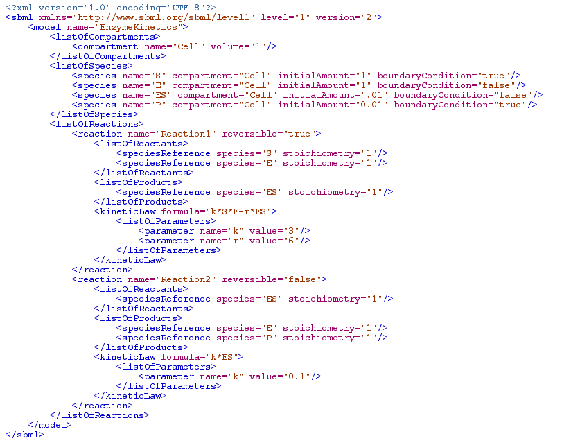
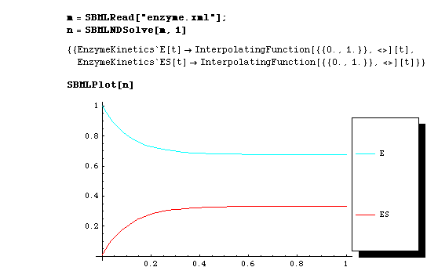
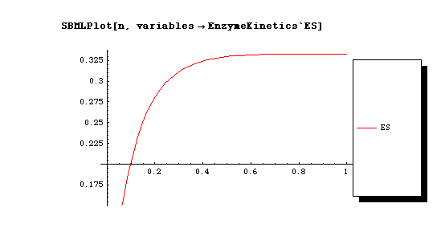
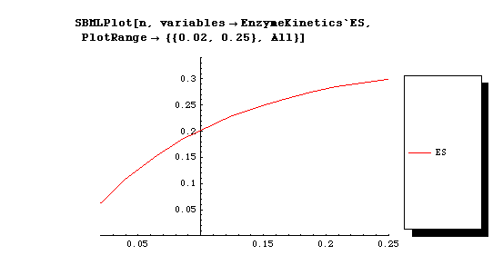
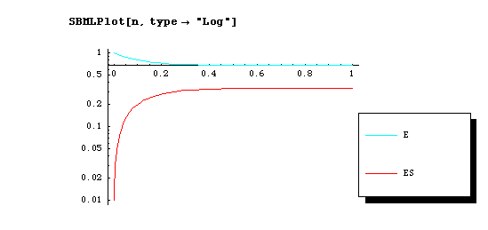

| MathSBML Home Page | MathSBML Site Map |
SBMLPlot |
|||||||||
|
SBMLPlot is a wrapper for Plot that is compatable with the output of SMBLNDSolve and/or SBMLRead; in other words, you don't have to know anything about the format of the data structure returned by eithe SBMLNDSolve or SBMLRead to use SBMLPlot. Experienced Mathematica users are also free to use Plot or any of the other more advanced graphics utilities available to them.
In the first form, all variables in the file are plotted for the entire duration of the run. The input solution to SBMLPlot is typically the output of SBMLNDSolve. However, if automatic integration was enabled during SBMLRead, then the model itself will contain a solution, and the model returned by SBMLRead can be sent directly to SBMLPlot without any further processing. Thus m = SBMLRead["myfile.xml"]; n = SBMLNDSolve[n,1]; SBMLPlot[n]; and
m = SBMLRead["myfile.xml",
return->{SBMLNumericalSolution->1}];
SBMLPlot[m];
and
m = SBMLRead["myfile.xml",
return->{SBMLNumericalSolution->1},
PlotOptions->True];
will all generate the same plot. The following example illustrates the use of SBMLNDSolve to solve a model after it is read by SBMLRead, and then the use of SBMLPlot to plot the model after the numerical solution is computed. Here is the model: Click on xml to view larger image Here is the solution and plot: To plot a subset of variables, the option variables is available. For example,
Plot[s, variables->{x, y, z}]
will only plot the variables
x,
y, and
z in the solution
s, while Plot[s, variables->x]will only plot the variable x.  Observe that when plotting specific variables, the entire variable name, including context, must be specified. Any valid option for Plot can be passed in:  The option type allows different kinds of plots. At the present, the only allowed value of type is "log"  |
{kind=link}